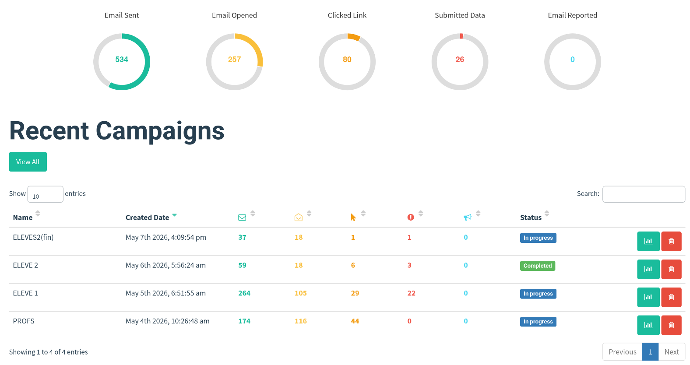
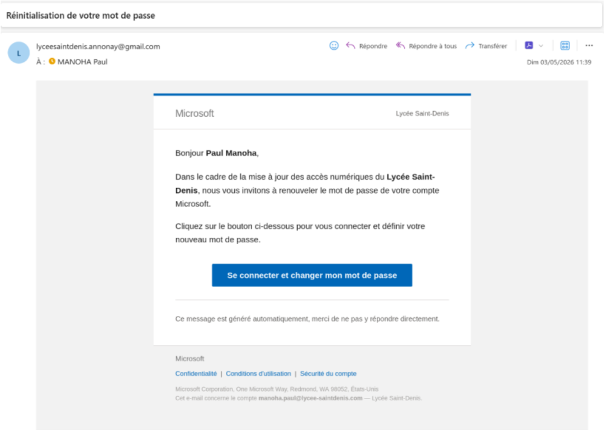
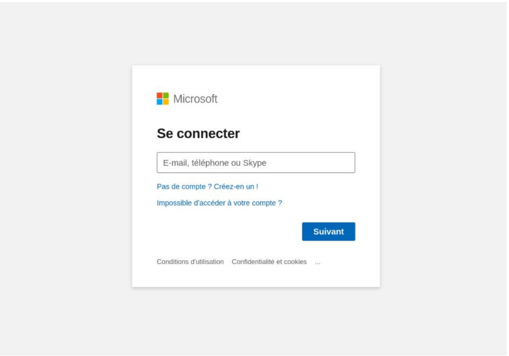

Campagne de Phishing Pédagogique & Sensibilisation
L'objectif de ce projet mené en équipe était de concevoir, déployer et analyser une campagne de simulation d'attaque par ingénierie sociale (Phishing) au sein d'un établissement d'enseignement afin de mesurer la vulnérabilité des utilisateurs et d'éditer un support concret de prévention.
Conformément à la réglementation, aucune donnée d'authentification (mot de passe) n'a été interceptée ni stockée en clair. Le framework a été configuré pour capturer uniquement l'événement de soumission du formulaire pour des besoins statistiques anonymes.
1. Architecture Technique et Réseau
Pour assurer l'hébergement de la plateforme open-source Gophish, nous avons déployé une infrastructure résiliente et sécurisée basée sur un serveur local exposé de manière contrôlée :
- Serveur d'hébergement : Un Raspberry Pi 5 équipé de Pi OS Lite, assurant un rôle de serveur dédié basse consommation en ligne de commande.
- Exposition Externe : Utilisation d'un Tunnel Cloudflare pour publier la Landing Page en HTTPS (domaine
.trycloudflare.com) sans ouverture de port critique sur le routeur de l'infrastructure d'accueil. - Administration Distante : Configuration d'un VPN Mesh avec Tailscale pour manager l'infrastructure SSH et superviser l'outil d'administration Gophish de façon isolée.

2. Conception des Leurres : Email & Landing Page Templates
La crédibilité du scénario reposait entièrement sur la fidélité visuelle des interfaces présentées aux cibles. Nous avons configuré deux éléments majeurs dans Gophish :
- L'Email Template : Création d'un message au format HTML usurpant l'identité visuelle de Microsoft. Le texte exploitait le levier psychologique de l'urgence en simulant une tentative de connexion suspecte et en exigeant une réinitialisation immédiate du mot de passe via un bouton d'action.
- La Landing Page : Clone de la page d'authentification officielle
login.live.com. J'ai importé et nettoyé le code source HTML/CSS original pour assurer un rendu graphique identique sur navigateur (desktop et mobile) et optimiser le taux de conversion de la simulation.


3. Automatisation & Résilience : Script de Sauvegarde
La base de données Gophish reposant sur un fichier de type SQLite (gophish.db), j'ai écrit et planifié un script Bash pour automatiser l'arrêt propre du service et la sauvegarde à chaud afin de prévenir toute corruption de données :
#!/bin/bash
# Automatisation de l'archivage de la base de données Gophish
BACKUP_DIR="/home/astropathe/backups"
DB_PATH="/opt/gophish/gophish.db"
DATE=$(date +%Y-%m-%d_%H-%m)
echo "[*] Arrêt du service Gophish..."
sudo systemctl stop gophish
if [ -f "$DB_PATH" ]; then
echo "[*] Copie et compression de la base de données..."
cp "$DB_PATH" "$BACKUP_DIR/gophish_$DATE.db"
echo "[+] Sauvegarde réussie : gophish_$DATE.db"
else
echo "[-] Erreur : Fichier de base de données introuvable."
fi
echo "[*] Redémarrage du service Gophish..."
sudo systemctl start gophish4. Analyse Post-Campagne et Livrables
Les envois ont été séquencés par vagues horaires (Staggered Sending) afin de contourner les détections heuristiques basiques. L'analyse fine des résultats a permis de mettre en évidence des comportements cibles précieux :
- Incident et Résilience technique : Gestion des restrictions de quotas SMTP imposés par le relais Gmail (limitation d'envois à 500 messages par tranche de 24h glissantes) ayant nécessité une mise en conformité de la file d'attente d'envois.
- Livrable de Remédiation : Conception complète d'un flyer de sensibilisation détaillant les indicateurs de compromission visibles sur notre attaque (analyse de l'en-tête de l'expéditeur, détournement de l'URL Cloudflare, et la relativité de la sécurité liée au certificat SSL du cadenas).